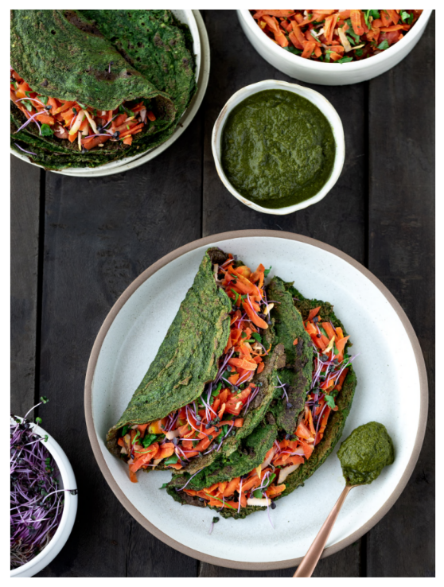

Ingredients
For the Cheelas
- 1 cup green split moong dal
- 1 teaspoon rock salt
- 1 small green chili, chopped
- 2 cups spinach
For the Filling
- 4 carrots, thickly grated
- 4 tomatoes, chopped finely
- 1⁄2 cup grated coconut
- 1⁄2 cup coriander, chopped
- 1 teaspoon rock salt
Green Chutney
- *2 1⁄2 cups of chopped spinach, when blended, gives 2 cups of spinach.
Pre-preparation
Soak moong dal in water for about 3 hours.
Method
- Combine the soaked moong dal, salt and chili in a blender and blend until smooth. Transfer the mixture to a bowl. Add the spinach puree to the mixture and stir well.
- Heat a pan (tava), sprinkle a little water on it and wipe it off gently using a muslin cloth. Pour a ladle full of the batter on it and spread it in a circular motion to make a thin circle. Cook on a medium flame till it turns brownish-green in color.
- To prepare the filling, simply combine the carrots, tomatoes, coconut, coriander, microgreens and salt. Fill your cheelas with this filling, and serve immediately with green chutney.
Return to top
Return to main page